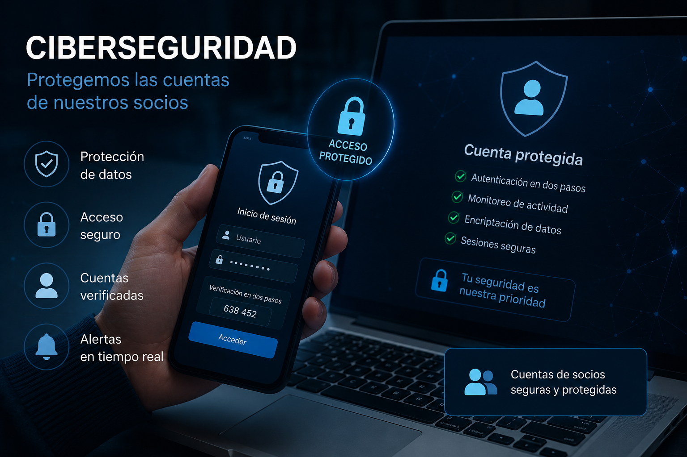

| Conceptes
| ConceptesCiberseguretat
A Cine Horizon, la seguretat i la privacitat dels nostres espectadors són una prioritat fonamental. Per aquest motiu, totes les comptes de socis i usuaris estan protegides mitjançant sistemes avançats de ciberseguretat dissenyats per garantir la confidencialitat de les dades personals i oferir una experiència segura dins de la nostra plataforma.
Les dades dels nostres clients, com ara informació personal, historial de reserves o mètodes de pagament, són emmagatzemades utilitzant sistemes de xifratge que impedeixen l’accés no autoritzat a la informació. A més, totes les connexions entre els usuaris i els nostres serveis digitals es realitzen a través de protocols segurs que protegeixen la transmissió de dades en tot moment.
Per reforçar encara més la protecció dels comptes, Cine Horizon incorpora sistemes d’autenticació segura que permeten verificar la identitat dels usuaris i reduir el risc d’accessos fraudulents. També comptem amb mecanismes de detecció d’activitats sospitoses que monitoritzen possibles intents d’intrusió o comportaments anòmals dins de la plataforma.
El nostre equip tecnològic realitza actualitzacions i revisions constants dels sistemes de seguretat amb l’objectiu de prevenir vulnerabilitats i adaptar-se a les noves amenaces digitals. D’aquesta manera, garantim que les dades dels nostres espectadors es mantinguin protegides i que els nostres serveis compleixin amb els estàndards actuals de seguretat informàtica.
A més de protegir la informació dels nostres socis, també promovem bones pràctiques de seguretat digital, recomanant l’ús de contrasenyes segures i oferint eines perquè els usuaris puguin gestionar la seva privacitat de manera senzilla i eficient.
Gràcies a la combinació de tecnologia avançada, monitoratge constant i protocols de protecció de dades, a Cine Horizon podem oferir una experiència digital segura, fiable i preparada per garantir la tranquil·litat de tots els nostres espectadors.
